现象
现象Ⅰ
木星的卫星，由其伸向木星中心的半径所掠过的面积，正比于运行时间；设恒星静止不动，则它们的周期时间正比于到其中心距离的
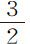
次幂。这是天文观测事实。因为这些卫星的轨道虽然不是与木星共心的圆，但却相差无几；它们在这些圆上的运动是均匀的。所有天文学家都公认木卫星的周期时间正比于其轨道半径；下表也证实了这一点。
木星卫星的周期
1天18小时27分34秒，3天13小时13分42秒，7天3小时42分36秒，16天16小时32分9秒。
庞德先生曾使用最精确的千分仪按下述方法测出木星直径及其卫星的距角。他用15英尺长的望远镜中的千分仪，在木星到地球的平均距离上，测出木卫四到木星的最大距角为大约8′16″。
木卫三的距角用123英尺长望远镜中的千分仪测出，在木星到地球的同一个距离上，该距角为4′42″。在木星到地球的同一个距离上，由其周期时间推算出另两个卫星的距角为
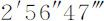
和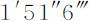
。卫星到木星中心的距离
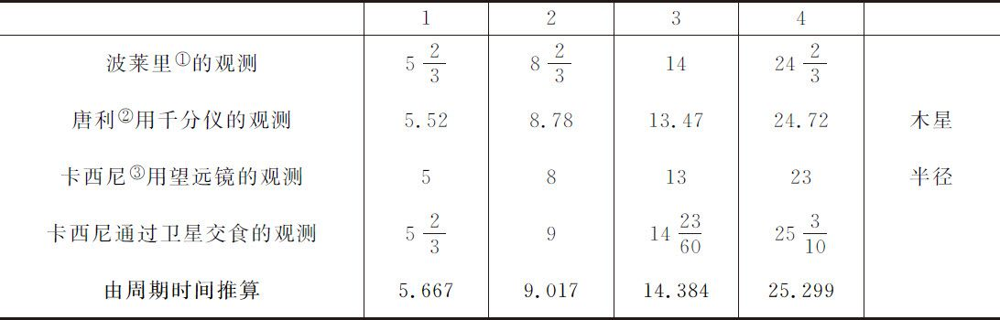
① Borelli（1608—1679），意大利天文学家，生理学家，数学家，最先提出彗星沿抛物线运动（1665）。——译者注。
② Townly；Richard（1625—1707），英国自然哲学家，曾对千分仪做出重大改进。——译者注。
③ Cassimi，G．D．（1625—1712），法国天文学家，为巴黎天文台首任台长。——译者注。
木星的直径由123英尺望远镜的千分仪测量过多次，在木星到地球的平均距离上，它总是小于40″，但从未小于38″，一般为39″。在较短的望远镜内为40″或41″；因为木星的光由于光线折射率的不同而略有扩散，该扩散与木星直径的比，在较长较完善的望远镜中较小，而在较短性能差些的镜中较大。还用长望远镜观测过木卫一和木卫三两星通过木星星体时间，从初切开始到终切开始，以及从初切结束到终切结束。由木卫一通过木星来看，在其到地球的平均距离上，木星直径为
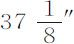
，而由木卫三则给出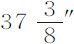
。还观测过木卫一的阴影通过木星的时间，由此得出木星在其到地球的平均距离上直径为约37″。我们设木星直径极为近似于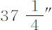
，则木卫一、木卫二、木卫三和木卫四的距角分别为木星半径的5.965，9.494，15.141，和26.63。现象Ⅱ
土星卫星伸向土星中心的半径，所掠过的面积正比于运行时间；设恒星静止不动，则它们的周期时间正比于它们到土星中心距离的
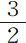
次幂。因为，正如卡西尼由其本人的观测所推算的，卫星到土星中心的距离与它们的周期时间如下：
土星卫星的周期时间
1天21小时18分27秒，2天17小时41分22秒，4天12小时25分12秒，15天22小时41分14秒，79天7小时48分00秒。
卫星到土星中心的距离（按半径计算）
观测值
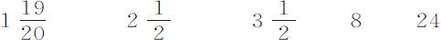
由周期推算值
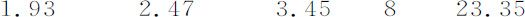
一般由观测推算出土卫四到土星中心的最大距角非常近似于其半径的八倍。但用装在惠更斯先生精度极高的123英尺望远镜中的千分仪发现，该卫星到土星中心的最大距角为其半径的
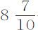
倍。由此观测与周期推算卫星到土星中心的距离为土星环半径的2.1，2.69，3.75，8.7和25.35倍。同一望远镜观测到土星直径比环直径等于3比7；1719年5月28—29日，测得土星环直径为43″；因此，当土星处于到地球的平均距离上时，环直径为42″，土星直径为18″。这些结果是在极长的高精度望远镜中测出的，因为在这样的望远镜中，天体的像与像边缘的光线扩散比值较大，因在较短的望远镜中该值较小。所以，如果排除所有的虚光，土星的直径将不大于16″。现象Ⅲ
五个行星，水星、金星、火星、木星和土星，在其各自的轨道上环绕太阳运转。
水星与金星绕太阳运行，可以由它们像月球一样的盈亏证明。当它们呈满月状时，相对于我们而言高于或远于太阳；当它们呈亏状时，处于太阳的一侧或另一侧相同高度上；当它呈新月状时，则低于我们或在我们与太阳之间；有时它们直接处于太阳之下，看上去像通过太阳表面的斑点。火星在与太阳的会合点附近时呈满月状，在方照点时呈凸月状，这表明它绕太阳运转。木星和土星也同样绕太阳运动，它们出现于所有位置上；因为卫星的阴影时常出现在它们的表面上，这表明它们的光亮不是自己发出的，而是借自太阳。
现象Ⅳ
设恒星静止不动，则五个行星，以及地球环绕太阳（或太阳环绕地球）的周期，正比于它们到太阳平均距离的
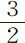
次幂。这个比率最先由开普勒发现，现已为所有天文学家接受；因为无论是太阳绕地球转，还是地球绕太阳转，周期时间是不变的，轨道尺度也是不变的。至于周期时间的测量，所有天文学家都是一致的。但在轨道尺度方面，开普勒和波里奥 (1) 的观测推算比所有其他天文学家都精确；对应于周期值的平均距离与它们的预期值不同，但相差无几，而且绝大部分介于它们之间；如下表所示。
行星和地球绕太阳运动周期时间，按天计算，太阳保持静止。
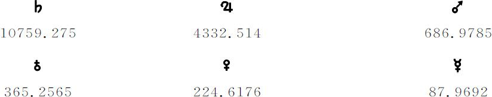
行星与地球到太阳的平均距离
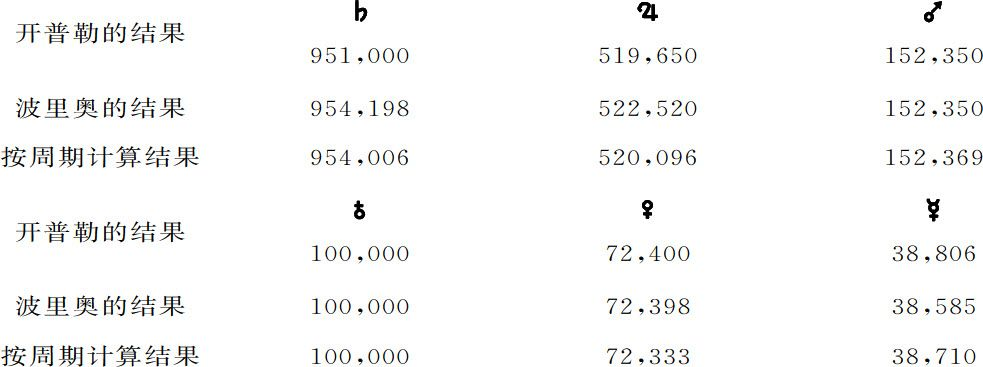
水星与金星到太阳的距离是无可怀疑的；因为它们是由行星到太阳的距角推算出的；至于地球以外的行星的距离，有关的争论都已被木星卫星的交食所平息。因为通过交食可以确定木星投影的位置；由此即可求出木星的日心经度长度。再通过比较其日心经度长度与地心经度长度，即可求出其距离。
现象Ⅴ
行星伸向地球的半径，所掠过的面积不与时间成正比；但它们伸向太阳的半径所掠过的面积正比于运行时间。
因为相对于地球而言，它们有时顺行，有时驻留，有时逆行。但从太阳看上去，它们总是顺行的，其运动接近于匀速，也就是说，在近日点稍快，远日点稍慢，因而能保持掠过面积的相等性。这在天文学家中是人所共知的命题，尤其是可以由木星卫星的交食加以证明；前面已经指出，通过这些交食，可以确定木星的日心经度长度以及它到太阳的距离。
现象Ⅵ
月球伸向地球中心的半径所掠过的面积正比于运行时间。
这可以由将月球的视在运动与其直径相比较得出。月球的运动确实略受太阳作用的干扰，但误差小而且不明显，我在罗列诸现象时予以忽略。
————————————————————
(1) Boulliau, Ismael（1605—1694），法国数学家、天文学家．——译者注。